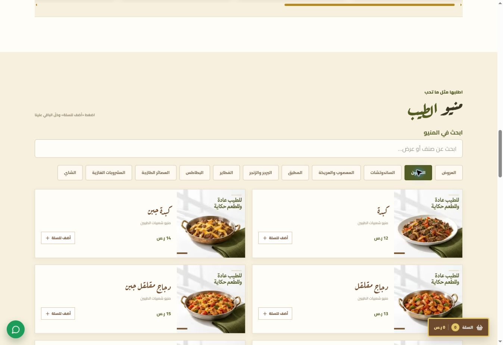
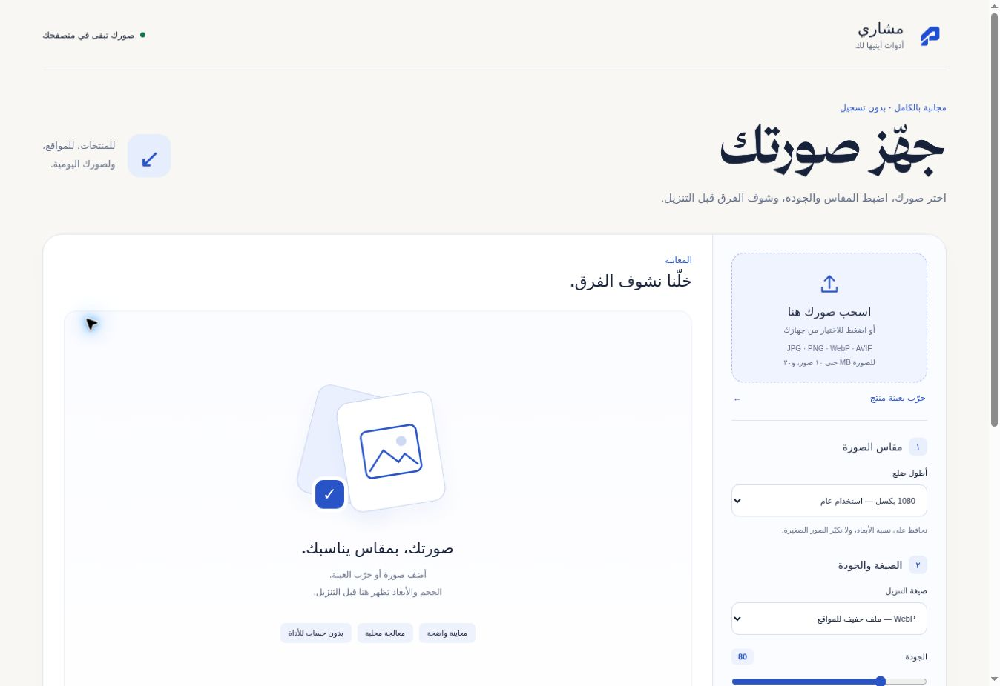

مواقع وصفحات تعريفية
مساحة توضّح مشروعك، تعرض شغلك، وتسهّل على الناس الوصول إليك من الجوال والكمبيوتر.
شوف أمثلة من أعماليمواقع وأدوات من بنائي
أنا مشاري، طالب ثانوي ومبرمج مبتدئ.
تعلّمت الأساسيات، وأطوّر مهاراتي بالمشاريع.
من الفكرة إلى شيء تقدر تستخدمه
شغل واضح، يخدم مشروعك.
مساحة توضّح مشروعك، تعرض شغلك، وتسهّل على الناس الوصول إليك من الجوال والكمبيوتر.
شوف أمثلة من أعماليمنتجات وأقسام وصور مرتبة، مع بحث وتصفّح واضح. ونحدّد طريقة الطلب المناسبة لمشروعك.
مثل منيو شعبيات الطيبينتجهيز صور المنتجات وتنسيقها للموقع والحسابات، وتسليم الملفات بأسماء وترتيب يسهل الرجوع إليه.
شوف نماذج الصورنبدأ من احتياجك، ونختار له التنفيذ المناسب. احكِ لي عن فكرتك ↖
أعمال تشرح الفكرة أكثر
من صور المنتجات، إلى منيو يخلّي الاختيار أسهل.

جهّزت صور المنتجات وسمّيتها ورتّبت ملفاتها، وبنيت موقعًا ومنيو تفاعليًا لعرضها. وشمل العمل إضافة المنتجات وترتيب ملف المطعم على قوقل ماب.


مقاس مناسب. ملف أخف. وصورك تبقى عندك.

أداة مجانية لتغيير مقاس الصور وصيغتها وجودتها، مع معاينة ومقارنة قبل التنزيل. المعالجة داخل المتصفح، ويمكن تنزيل صورة واحدة أو مجموعة في ZIP.
أدوات، برومبتات، وأشياء تستحق المشاركة
افتح، انسخ، أو احفظ لوقت لاحق.
عن مشاري
أهتم بفهم الكود، وتجربة الحلول، وتحسينها خطوة بخطوة. هنا أجمع أعمالي والأدوات والموارد المفيدة، وأشارك ما أتعلّمه خلال التنفيذ.
تابع التجارب على TikTok CURIOUS. BUILDING. SHARING.نبدأ من فكرتك
موقع، منيو، أو صور لمشروعك؟ اكتب لي الهدف، ونبدأ الحديث من هناك.